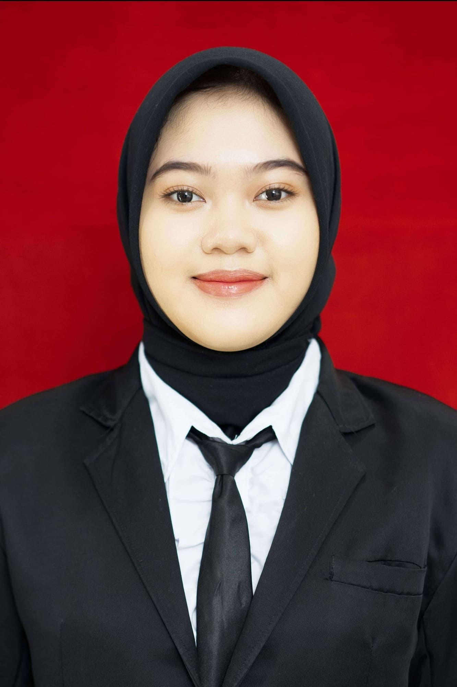

Expertise & Connect
Keahlian & Kontak
Technologies & Core Skills
Tech Stack
🎯 Core Focus & Tools:
System Analysis, Requirement Gathering, UML & BPMN Modeling, Black-box & UAT Testing, Draw.io, Microsoft Office.

Hubungi Saya
© 2026 Anindita Septian Ningrum.